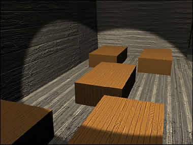

Servants' Burial Chamber

This room contains the coffins of the lord's servants. They are buried farther away from the lord; this shows their difference in status. The practice of following in death was common in the Shang, Western Zhou and Eastern Zhou dynasties. Those people who were close to the person who died would be killed and buried in the same chamber. Kings and important lords would have many servants and guards buried with them, so that they would be served properly in the next life. Only the very rich could afford followers-in-death; most ordinary people were buried alone. Click on a coffin to find out more |